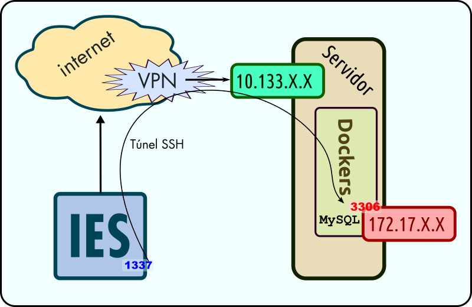

üîë SSH e túneles
E todo sen cavar nin picar pedra. Con pouco esforzo comprenderás dunha vez como funciona SSH, os erros máis habituais e como facer un túnel e os tipos que hai. Comprenderás a potencia que esconden e aprenderás a explotala.
◼️ Qué é SSH
Un protocolo cifrado (Secure SHell) para conectar cun servidor e poder enviarlle comandos en modo texto. Permite moitas máis opcións, como por exemplo, redirixir portos.
üóùÔ∏è Xerar chave SSH
Hoxe en día deberíamos abandonar a autenticación por usuario e clave en prol dun método máis seguro, o cifrado asimétrico que emprega chave pública e privada.
Dentro do noso HOME (cartafol de usuario). Habitualmente en GNU/Linux: /home/USUARIO e en Microsoft Windows: C:\Users\USUARIO, debe existir un directorio/cartafol .ssh que pode conter o seguinte:
- üìÅ .ssh
- üìÑ known_hosts: Fingerprints dos servidores aos que nos temos conectado. A primeira vez que conectamos cun servidor, av√≠sanos e nos amosa o fingerprint. Te√≥ricamente deber√≠amos asegurarnos que √© correcto para evitar ataques tipo MITM.
- üìÑ authorized_keys: Fingerprints das chaves públicas autorizadas a entrar no servidor.
- üìÑ config: Para non ter que empregar opci√≥ns ao conectar. P√≥dese empregar unha chave, usuario e redirecci√≥n de portos diferente por cada host.
- üîë id_rsa: Chave privada (non publicar e protexer por frase de paso) permite descifrar/asinar o que se cifrou coa chave pública.
- üîê id_rsa.pub: Chave pública, p√≥dese publicar e subir aos servidores. D√©bese engadir ao final do arquivo known_hosts para autorizar a nosa chave.
Se non existe, podemos facer unha das seguintes cousas para crealo:
- Tentar conectar con calquer servidor por SSH. Exemplo:
ssh localhost. - Xerar unha chave SSH:
ssh-keygen.
ü™ü Microsoft Windows
Abrimos PowerShell e executamos:
Vídeo de Youtube

üêß GNU/Linux
Abrimos unha consola xterm ou similar e executamos:
Vídeo en ASCIINEMA

üöá Tunelizaci√≥n SSH: Empregando SSH para redireccionar portos (SSH Port Forwarding)
Se precisamos acceder a un recurso que está detrás dun firewall ou ben non é accesible directamente pero ao que pode acceder un equipo que ten o servizo de SSH aberto e ao que nos podemos conectar, podemos crear un tunel SSH.

♵ Tipos de túneles
- Locales: Abren no noso equipo (no que executamos o comando SSH) un porto. O destino pode ser o mesmo host ssh (localhost) ou outro destino ao que ese servidor teña acceso.
- Remotos: Abren no porto do host SSH ao que nos conectamos. Podemos exportar un servizo local.
- Dinámicos: Creamos un proxy socks que pode ser empregado por moitas aplicacións (por exemplo, un navegador).
üî≤ Comandos
Nunha consola, chamando SSH directamente podemos facer:
Sintaxe: -L: Indica local. O número: 1337 representa o porto local que se abrirá no noso equipo. De conectamos a él, levaranos á IP: 172.17.X.X e porto 3306 a través do servidor ao que nos estamos a conectar.